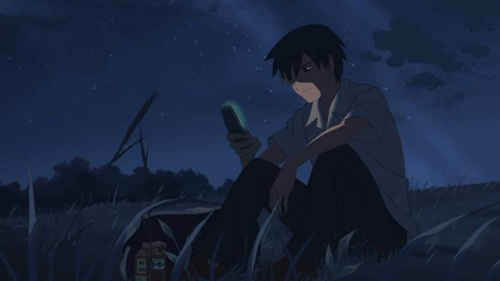
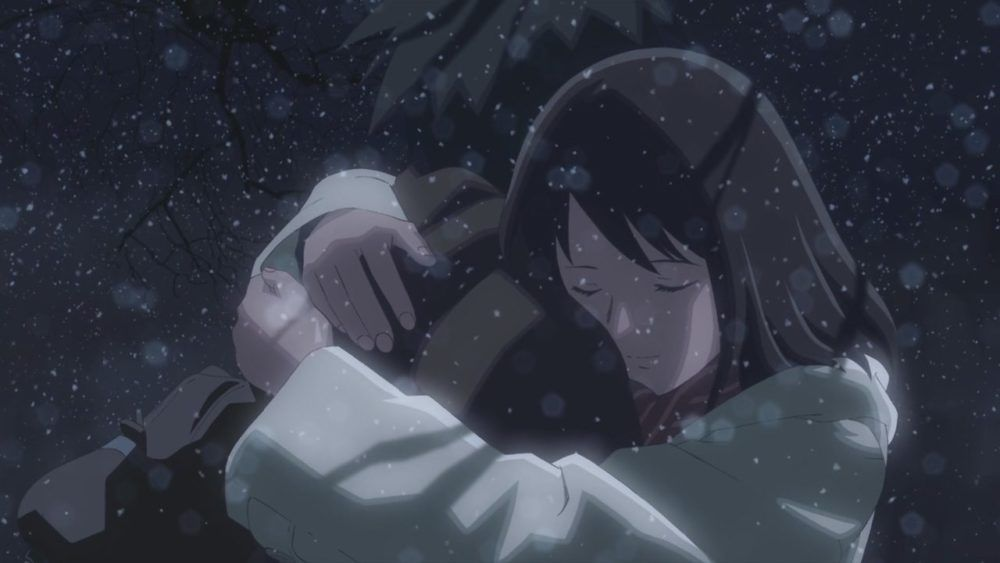
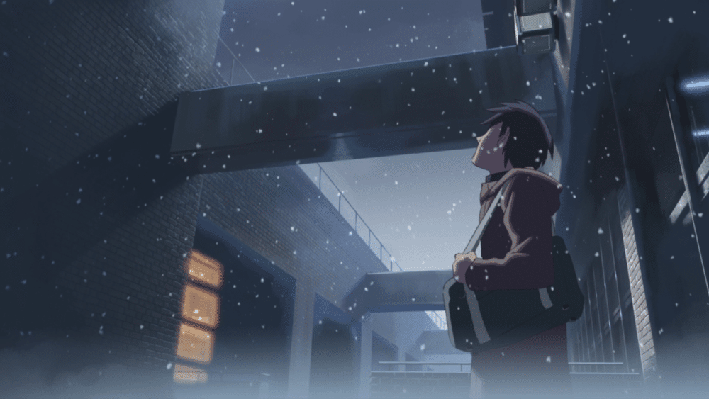
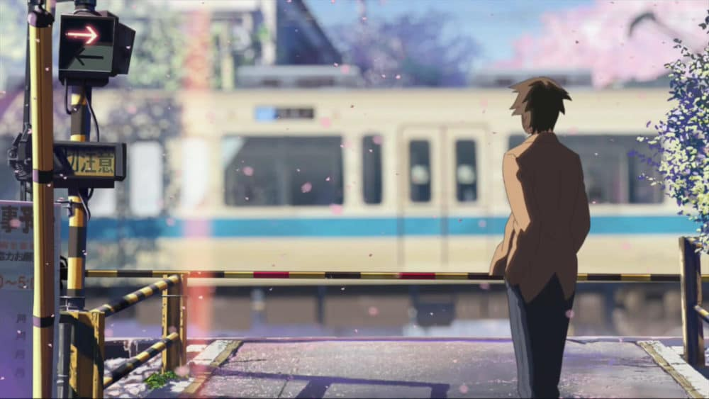
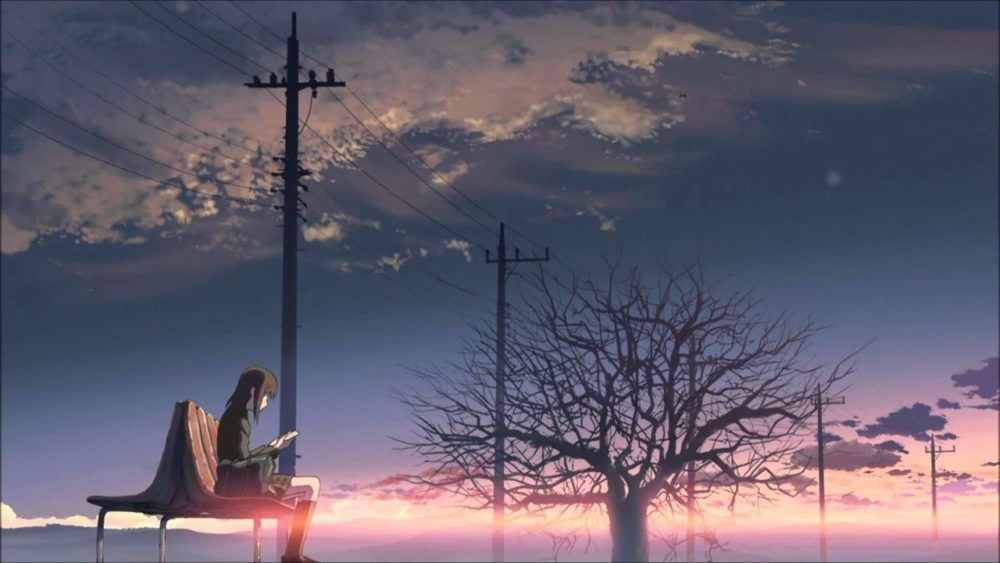

"5 Centimét trên giây" ra mắt vào 2007, là tác phẩm góp phần đưa tên tuổi Shinkai Makoto ra ánh sáng. Bộ phim đã trở thành hiện tượng của điện ảnh Nhật bản ngay khi vừa ra mắt và xuất sắc giành giải Phim hoạt hình xuất sắc nhất tại lễ trao giải điện ảnh Châu Á Thái Bình Dương.
"Này,tớ nghe nói Vận tốc là năm centimet trên giây"
"gì cơ?"
[...]
"Vận tốc rơi hoa anh đào ấy. Năm centimet trên giây"
là câu chuyện về cuộc đời của những bạn trẻ mà Toono Takaki là nhân vật trung tâm. Lần lượt từng câu chuyện là từng dấu mốc quan trọng trong cuộc đời của Takaki, tình yêu sâu đậm và cả cuộc chia tay trong đau đớn.
Cậu vẫn luôn day dứt, tiếc nuối về một kỷ niệm đã trôi xa trong quá khứ.
“Nếu vận tốc của hoa anh đào không phải là 5cm/s thì có lẽ nó sẽ không đẹp như thế. Và nếu khoảng cách giữa tôi và em là 5cm, thì có lẽ chỉ cần một bước để đến với em chứ không phải là cả một đời người.
Hoa anh đào vẫn rơi
Và tôi đã nắm trượt nó.”
Bộ phim mở đầu bằng câu chuyện của Takaki và Akari năm mười ba tuổi, tình cảm của hai đứa trẻ chớm nở từ những tương đồng trong cuộc sống hàng ngày, từ tâm hồn cho đến những điều nhỏ nhặt trong cuộc sống thường nhật.
Và đó là sự mở đầu cho những hứa hẹn của lứa tuổi đầy mộng mơ. Cả hai luôn quấn quýt nhau không rời, ý nghĩ sẽ rời xa người kia cũng chưa từng xuất hiện.
Nhưng sự chia ly chưa bao giờ được báo trước, Akari không thể tiếp tục lời hứa và phải chuyển đi nơi khác, lần đầu tiên trong cuộc đời cả hai hiểu được nỗi đau của sự chia xa. Họ chỉ có thể kết nối với nhau qua những kỷ niệm xưa cũ được gói gọn trong vài dòng thư
Nhưng dần dần, khoảng cách và những biến động trong cuộc sống đã khiến hai tâm hồn non nớt không còn kiên định với tình cảm đầu đời của mình.
Mỗi người đều sẽ lớn lên, sẽ có cho mình những mối tình khác đẹp hơn nhưng đâu đó trong sâu thẳm trái tim, hình bóng năm nào vẫn hiển hiện, khắc sâu mãi mãi. Dù có vươn tới đâu đi nữa, thỉnh thoảng ngực trái sẽ lại rung lên trong nỗi nhớ nhung và tiếc nuối.
Nhịp phim 5 Centimet trên giây luôn nhẹ nhàng và chậm rãi, không có những cao trào hay kịch tích. Shinkai Makoto đem đến cho người xem một bộ phim để ngẫm, để thấm và để xem lại hình bóng rất thân quen của bản thân trong quá trình trưởng thành của Takaki.
Cảm xúc tuyệt vọng của Takaki khi chuyến tàu đến với Akari bị dừng trong đêm bão tuyết, tâm trạng tiếc nuối khi Takaki đánh rơi bức thư trong đêm mịt mù, đó có lẽ là nỗi đau mà bất cứ ai khi còn trẻ cũng sẽ phải trải qua một lần.
“Tại sao mọi thứ đến với chúng tôi đều trắc trở như vậy?”
Đó là câu hỏi của Takaki và cũng là câu hỏi của chính bản thân mỗi người, tại sao trong những giây phút quan trọng nhất, thiêng liêng nhất thì số phận luôn thử thách chúng ta bằng cách nghiệt ngã nhất.
Nhân vật chính đã chìm sâu trong tuyệt vọng khi cậu và Akari luôn phải đối mặt với đau thương và mất mát. Dù vậy, sự rung động đầu đời luôn là thứ tình cảm thiêng liêng và thuần khiết nhất.
Tình yêu của tuổi học trò là khoảng thời gian mà chúng ta yêu điên cuồng, sẵn sáng đánh đổi mọi thứ cho tình cảm đó. Trong đêm tuyết đầu mùa, hai đứa trẻ đã làm mọi cách để có thể được gặp nhau dù chỉ trong giây lát.
“Chờ đợi có lẽ là việc khó khăn nhất trên đời, nhưng vẫn có nhiều người can tâm như thế, bất luận kết quả có thế nào đi nữa.”
Những chiếc tàu bị kẹt trong bão tuyết, ánh lửa le lói nơi nhà ga, hơn mười giờ chờ đợi trong cái lạnh thấu của mùa đông chỉ để tìm nhau của hai con người. Sự nỗ lực của họ khiến cho đêm tuyết trắng như được thắp lên ánh sáng thiêng liêng của tuổi trẻ.
Sự chia tay tất nhiên sẽ đến nhưng yêu thương đã được đặt ở nơi sâu thẳm nhất của con tim, tình yêu như những cánh hoa anh đào đẹp đẽ, rực rỡ nhưng rồi sẽ rơi theo gió. Có gặp nhau rồi sẽ lại chia xa.
Takaki và Akari chưa từng gặp lại nhau thêm lần nào nữa và lời hứa cùng nhau ngắm hoa anh đào rơi mãi mãi bị bỏ lỡ. Những dòng tin nhắn chưa bao giờ được gửi, những cảm xúc chưa bao giờ được nói ra. Cả hai đã lạc mất nhau vì những yếu đuối, sợ sệt của tuổi trẻ
Vào khoản khắc môi chạm môi, tôi đã hiểu ra ý nghĩa vĩnh viễn của trái tim, của linh hồn. Bằng nụ hôn ấy, chúng tôi đã trao nhau tất cả những gì quý giá và trọn vẹn của mười ba năm qua, để rồi giây phút tiếp theo và suốt quãng đời còn lại sẽ là nỗi buồn khôn nguôi đeo đẳng.”
Tình yêu bắt nguồn từ từ sự đồng điệu từ hai tâm hồn luôn là tình cảm khó quên nhất, nhưng tình cảm dù sâu đậm, bền chặt đến đâu rồi cũng sẽ phai mờ theo thời gian.
Trong cuộc đời của chúng ta ai rồi cũng sẽ phải trải qua vài ba mối tình. Có lẽ bạn sẽ yêu thêm nhiều người, trải qua những tình cảm sâu đậm nhưng chỉ có một người khiến ta mãi không thể quên.
" Đời mỗi người sẽ gặp khoảng 29,2 triệu người, xác suất để hai người yêu nhau là 0,000049. Cho nên, anh không yêu em, em không trách anh.”
Takaki khi trưởng thành thành trải qua thêm nhiều mối tình, cảm xúc cậu dành cho họ luôn rất chân thành và sâu đậm. Tiếc thay, Takaki chưa thể tìm ra được người con gái của đời mình, có lẽ mối tình đầu là vật cản quá lớn.
Dẫu bản thân luôn cố gắng thành trải qua thêm nhiều mối tình, cảm xúc cậu dành cho họ luôn rất chân thành và sâu đậm. Tiếc thay, Takaki chưa thể tìm ra được người con gái của đời mình, có lẽ mối tình đầu là vật cản quá lớn.
Xuyên suốt cuộc đòi đời của Takaki, hình ảnh về Akari đã trở thành nỗi đau và sự nhớ nhung mà cậu không thể vượt qua. Nhưng nhờ một khoảnh khắc, một trong những khung cảnh ấn tượng nhất của bộ phim mới giúp cho Takaki nhận ra đâu mới là hiện thực, để cậu bỏ qua quá khứ và hướng tới tương lai tốt hơn.
Vào một chiều trên phố phố, Takaki vô tình lướt qua Akaki tại nơi ngã tư đường. Cả hai dưởng như trở thành những người xa lạ, hai người dưng ngược lối. Cả hai cảm nhận được đều gì đó quen thuộc, họ dừng lại và nhìn nhau.
Một lần nữa như sự trêu đùa của số phận, đoàn tàu lướt qua chia cắt cả hai thêm một lần. Hình ảnh Takaki đứng bên đường ray chờ đợi đã đem lại sự ám ảnh, để rồi khi đoàn tàu lướt qua chỉ còn lại những cánh hoa anh đào rơi trong gió.
Với Akaki, cô nhóc mộng mơ ngày nào giờ đã trưởng thành một thiếu nữ, có cho mình một cuộc sống hạnh phúc bên người mới. Nhẹ nhàng bước qua vết thương của quá khứ và tìm cho mình một cuộc sống viên mãn với hiện tại.
Trong một lần tình cờ, Akaki đã tìm thấy những lá thư của thời học trò đẹp đẽ khi xưa nhưng khác với Takaki, cô chỉ hoài niệm đôi chút vể mối tình đầu thơ ngây. Ai rồi cũng có cuộc sống của riêng mình, có lẽ, đó là lý do Akaki bước đi mà không chờ đợi đoàn tàu lướt qua.
Trong khoản khắc đó,Takaki đã nhận ra rằng cả hai đều đã trưởng thành, sẽ có cho mình cuộc sống riêng. Với nụ cười trên môi, cậu thấy nhẹ nhàng và không còn mang nặng những dằn vặt lâu nay, chỉ còn những cánh hoa anh đào rơi. Bản thân cậu cũng rời khỏi nơi ấy.